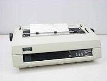
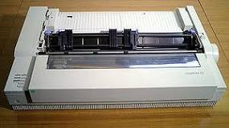
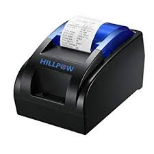
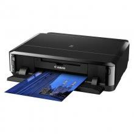

Clasificación
Debido al gran número de impresoras en el mercado y con diferentes tipos de este periférico de salida se pueden clasificar de
muchas maneras, pero la más comun es la que a continuación voy a poner, y es la clasificacion según el método de impresión con impacto .
Según el método de impresión, las impresoras se pueden agrupar en dos grupos claramente diferenciados; estas son: impresoras de impacto
e impresoras sin impacto.
- Impresoras de impacto
Estas impresoras funcionan de manera similar a las máquinas de escribir, ya que se basan en la fuerza de impacto del cabezal sobre la cinta para
transferir la cinta al soporte. Fueron las primeras en salir al mercado y aunque cada vez estan en mas desuso en comparación a las de inyección,
se siguen utilizando para imprimir formularios continuos.
Aunque hay un gran número de tipos de impresoras las más relevantes de este punto son las impresoras matriciales y la de margarita.
*''Impresora margarita:'' En este tipo de impresoras los caracteres estan distribuidos en una rueda en forma de margarita (de ahí a su
nombre); esta rueda gira colocando el carácter pedido de frente a la cinta y posteriormente un martillo golpea el carácter, pegandolo a
la cinta y transfiriendolo al papel.

*''Impresora matricial:'' La impresora matricial es un tipo de impresora con la cabeza de impresión que se desplaza de izquierda a derecha imprimiendo
sobre la página, oprimiendo una cinta de tinta contra el papel, de forma similar al funcionamiento de una máquina de escribir.
Las letras son obtenidas por selección de puntos de una matriz, y por tanto es posible producir distintos tipos de letra, y gráficos en general.

- Impresora sin impacto
Estas impresoras utilizan dispositicos, generalmente conectados directamente al ordenador,
estas emplean métodos más sotisficados para imprimir.
En este apartado hay tres tipos de impresoras que son las imprresoras térmicas, láser y de inyección.
*''Impresora térmica:'' la impresora térmica se basa en una serie de agujas calientes que van
recorriendo el papel termosensible, que al contacto se vuelve de color negro. Por su bajo coste, son muy usadas
en los cajeros automáticos y supermercados, la factura de la compra está realizado por esta impresora.

*''Impresora de inyección:'' Las impresoras de inyección de tinta funcionan expulsando gotas de tinta diferentes
tamaños sobre el papel. Son las impresoras más populares hoy en dia para el público de clase media y el más numerósos ya que
la capcidad de impresión de claidad a bajo costo lo convierte en la mejor impresora de calidad-precio.

*''Impresora láser:'' Este tipos de impresora basa su funcionamineto en la electricidad estática y consiste en un haz
de luz láser que graba la dirección, forma e intensidad de la imagen a imprimir en el cilindro fotoconductor, estos puntos
permanecen de manera ionizada y pasarán por el depósito de tóner donde la tinta en polvo es atraida por esos puntos para luego
transferirse al papel y por medio de un sistema de presión y calor se adhiere formando una impresión en muy poco tiempo